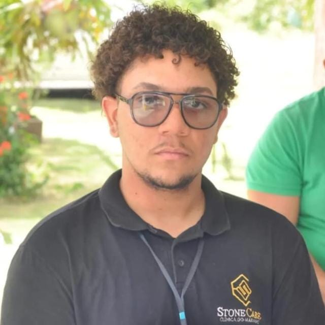

Sobre Mim
Olá! Sou Ryan Sá, um desenvolvedor web apaixonado por criar soluções inovadoras e eficientes. Com uma sólida experiência em desenvolvimento front-end e back-end, estou sempre em busca de novos desafios para aprimorar minhas habilidades e contribuir para projetos impactantes.
Minha jornada no mundo do desenvolvimento começou há alguns anos, quando descobri minha paixão por tecnologia e programação. Desde então, tenho me dedicado a aprender e crescer como profissional, explorando diversas tecnologias e frameworks para oferecer as melhores soluções aos meus clientes.
Acredito que a chave para o sucesso em qualquer projeto é a colaboração e a comunicação eficaz. Estou sempre aberto a novas ideias e disposto a trabalhar em equipe para alcançar os melhores resultados. Se você tem um projeto em mente ou gostaria de saber mais sobre meu trabalho, não hesite em entrar em contato!
